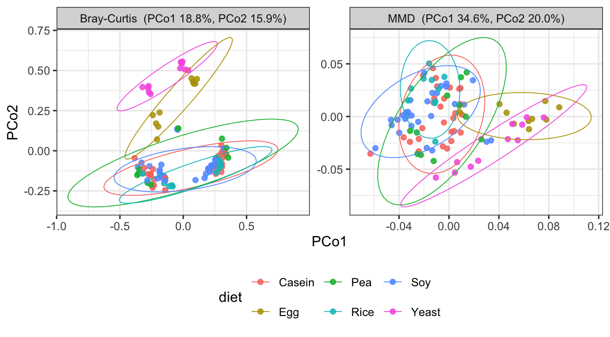
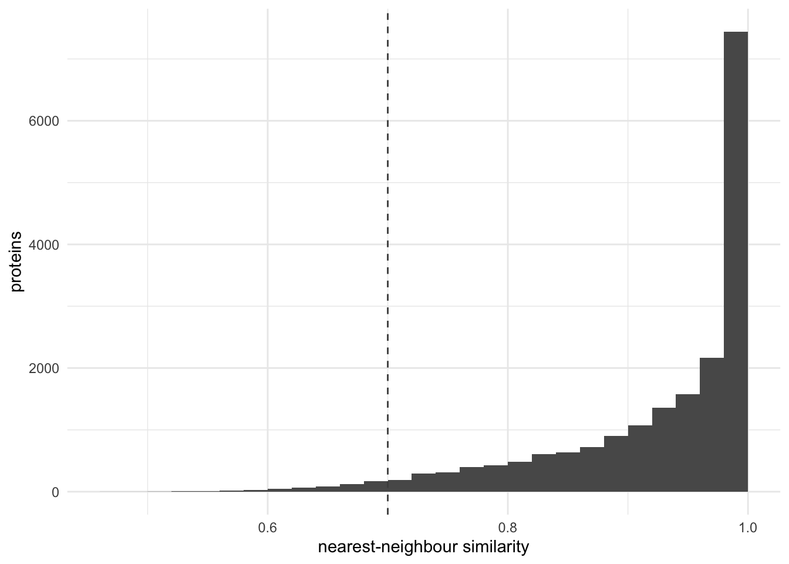
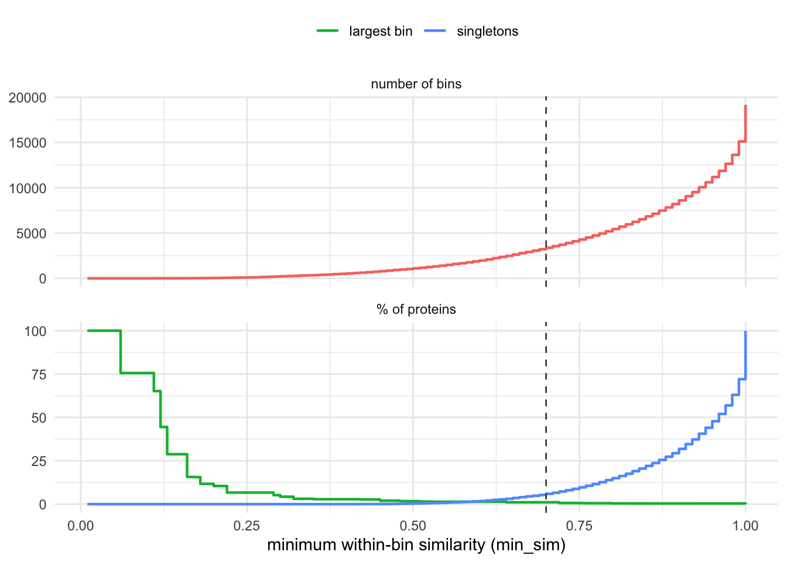
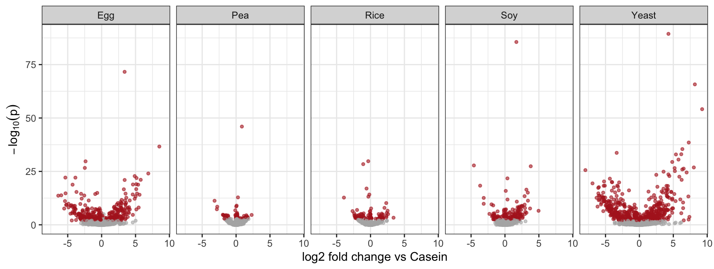
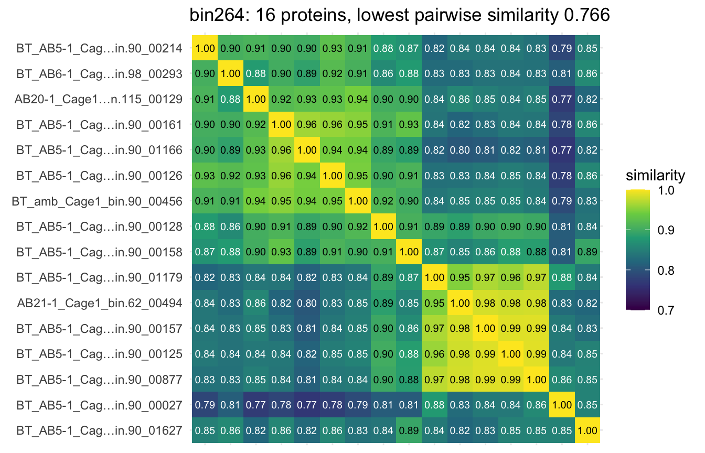

Bray-Curtis, Jaccard and their relatives compare samples through protein identity: two proteins are either the same accession or maximally different. Metaproteomes break that assumption. Two communities can carry the same enzymatic function on accessions that never overlap, and an identity-based distance cannot tell that case apart from any other difference.
repdist replaces identity with distance in a protein
language model’s representation space. Each sample becomes an
abundance-weighted distribution over protein embeddings, and two samples
are compared by maximum mean discrepancy (MMD) under an RBF kernel.
This report follows the package vignette’s workflow on the complete retained protein set:
library(repdist)
library(ggplot2)
library(phyloseq)The study is Blakeley-Ruiz et al., ISME J 19(1) wraf048: mouse faecal metaproteomes across six dietary protein sources, quantified by spectral counting.
path <- file.path("data", "test_study")
MAX_AA <- 3000L
ps <- readRDS(file.path(path, "ps.rds"))
floor_depth <- min(sample_sums(ps))
set.seed(1)
psd <- rarefy_even_depth(ps, sample.size = floor_depth, rngseed = 1,
replace = FALSE, verbose = FALSE)
psd <- prune_samples(sample_data(psd)$phase != "baseline", psd)
psd <- prune_taxa(taxa_sums(psd) > 0, psd)
n_after_rarefaction <- ntaxa(psd)
protein_length <- Biostrings::width(refseq(psd)[taxa_names(psd)])
too_long <- protein_length > MAX_AA
long_abundance <- sum(taxa_sums(psd)[too_long]) / sum(taxa_sums(psd))
psd <- prune_taxa(!too_long, psd)
keep <- taxa_names(psd)
psu <- prune_samples(sample_data(ps)$phase != "baseline", ps)
psu <- prune_taxa(taxa_names(psu) %in% keep, psu)
counts <- Matrix::Matrix(t(as(otu_table(psd), "matrix")), sparse = TRUE)
counts_raw <- t(as(otu_table(psu), "matrix"))[rownames(counts), keep, drop = FALSE]
md <- data.frame(sample_data(psd))[rownames(counts), ]
md$diet <- factor(md$diet)
md$dose <- factor(md$dose)
md$subject <- factor(md$subject)
t6 <- read.delim(file.path(path, "annotated",
"ExtendedDataTable6AnnotatedMicrobialMetaproteomes.txt"),
skip = 2, quote = "\"", check.names = FALSE,
colClasses = "character", comment.char = "", fileEncoding = "latin1")
tx <- as.data.frame(as(tax_table(psd), "matrix"))[keep, ]
taxa <- data.frame(
protein = keep,
genus = tx$Genus,
species = tx$Species,
annotation = unname(setNames(t6[["Consensus annotation"]],
t6[["Protein Identifier"]])[keep]),
length = Biostrings::width(refseq(psd)[keep]),
row.names = keep, stringsAsFactors = FALSE)
taxa$annotation[is.na(taxa$annotation) | !nzchar(trimws(taxa$annotation))] <- NA_character_
d <- list(counts = counts, counts_raw = counts_raw, metadata = md, taxa = taxa,
sequences = setNames(as.character(refseq(psd)[keep]), keep))
c(samples = nrow(counts), proteins = ncol(counts),
removed_over_3000aa = sum(too_long),
removed_abundance_pct = round(100 * long_abundance, 3))
#> samples proteins removed_over_3000aa
#> 99.000 19171.000 21.000
#> removed_abundance_pct
#> 0.073
table(md$diet)
#>
#> Casein Egg Pea Rice Soy Yeast
#> 28 10 11 10 29 11Rarefaction provides the abundance filter: proteins absent after
subsampling are removed. It retained 19192 proteins; the 3,000aa ceiling
then removed 21 more, representing only 0.073% of rarefied abundance.
The count matrix is sparse; counts_raw contains unrarefied
counts for exactly the same proteins and samples.
The ceiling is a choice made here, not a limit
repdist imposes. embed_proteins()
embeds every sequence whole – it never truncates and never silently
drops – and no function in the package takes a maximum length. The
reason to cut at 3,000 residues is TM-Vec: its head was trained on
structure pairs through 1,000 residues, so a predicted TM-score for a
chain many times longer is extrapolation well outside what the model
saw. At 0.073% of abundance the cut costs essentially nothing here,
which is what makes it worth taking. On a catalog where long proteins
carry real signal, raise it or drop it.
embed_proteins() embeds every sequence whole. The full
TM-Vec embeddings are cached outside the render because model inference
is not part of the statistical analysis.
cached <- readRDS(file.path(path, "embeddings_tmvec1_large.rds"))$Z
stopifnot(all(keep %in% rownames(cached)))
Z <- cached[keep, , drop = FALSE]
dim(Z)
#> [1] 19171 512TM-Vec’s head was trained to regress TM-score, so cosine similarity
between two embeddings is a predicted TM-score.
known_models() lists the other registered
representations.
names(known_models())
#> [1] "tmvec" "tmvec-300" "esm2-8m" "esm2-150m" "esm2-650m"repdist_matrix() builds the condensed protein-by-protein
cosine distance used by binning and QC. This is the expensive object in
the full analysis.
G_cos <- repdist_matrix(Z)bin_proteins() reads this scale as predicted TM-score.
sample_repdist() instead builds a Euclidean RBF internally
so the kernel remains positive semi-definite. On unit-norm TM-Vec
embeddings the two ground distances are monotone transforms of one
another.
c(median_predicted_TM = round(1 - median(G_cos), 3),
pairs_above_0.7 = sum(G_cos <= 0.3))
#> median_predicted_TM pairs_above_0.7
#> 0.345 797141.000Bray-Curtis is the protein-identity baseline. MMD asks how far apart different proteins actually are. The sparse count matrix stays sparse throughout the MMD calculation.
D <- list(
`Bray-Curtis` = vegan::vegdist(as.matrix(d$counts), "bray"),
`MMD` = sample_repdist(d$counts, Z))Both are abundance-weighted, so richness is checked before interpreting the diet effect.
rich <- vegan::specnumber(as.matrix(d$counts))
round(vapply(D, function(x) cor(rich, rowMeans(as.matrix(x))), numeric(1)), 2)
#> Bray-Curtis MMD
#> -0.37 -0.54Amount of protein, sex and age remain as covariates and diet enters last. Permutations are blocked within mouse.
perm <- permute::how(blocks = md$subject, nperm = 999)
res <- do.call(rbind, lapply(names(D), function(n) {
set.seed(1)
a <- vegan::adonis2(D[[n]] ~ dose + sex + age_week + diet, data = md,
by = "terms", permutations = perm)
data.frame(distance = n, R2 = round(a["diet", "R2"], 3),
F = round(a["diet", "F"], 2), p = a["diet", "Pr(>F)"])
}))
knitr::kable(res, row.names = FALSE)| distance | R2 | F | p |
|---|---|---|---|
| Bray-Curtis | 0.253 | 8.65 | 0.001 |
| MMD | 0.316 | 11.93 | 0.001 |
ord <- do.call(rbind, lapply(names(D), function(n) {
e <- cmdscale(D[[n]], k = 2, eig = TRUE)
rel <- 100 * e$eig / sum(e$eig[e$eig > 0])
data.frame(
Axis1 = e$points[, 1], Axis2 = e$points[, 2],
diet = md[rownames(e$points), "diet"],
panel = sprintf("%s (PCo1 %.1f%%, PCo2 %.1f%%)", n, rel[1], rel[2]))
}))
ggplot(ord, aes(Axis1, Axis2, colour = diet)) +
geom_point(size = 1.6, alpha = 0.85) +
stat_ellipse(type = "t", linewidth = 0.3) +
facet_wrap(~ panel, scales = "free") +
labs(x = "PCo1", y = "PCo2", colour = "diet") +
theme_bw() +
theme(legend.position = "bottom")
bin_proteins() uses complete linkage, so every pair
inside a bin meets the threshold. A 0.7 cut is stricter than the
conventional same-fold boundary of 0.5: bins are tighter, at the cost of
more singletons.
b <- bin_proteins(G_cos, min_sim = 0.7)plot_similarity_profile(G_cos, min_sim = 0.7)
plot_bin_profile(b, min_sim = 0.7)
The unrarefied counts roll up to bin level with one
rowsum().
bin <- setNames(rep(names(b$clusters), lengths(b$clusters)), unlist(b$clusters))
bin_counts <- t(rowsum(t(d$counts_raw), bin[colnames(d$counts_raw)]))
c(proteins = ncol(d$counts_raw), bins = ncol(bin_counts))
#> proteins bins
#> 19171 3376sizes <- lengths(b$clusters)
table(cut(sizes, c(0, 1, 2, 5, 10, Inf),
labels = c("1", "2", "3-5", "6-10", ">10")))
#>
#> 1 2 3-5 6-10 >10
#> 1138 651 787 395 4051138 proteins remain singleton bins. The other 2238 bins combine structurally related accessions, reducing the number of tested units by a factor of 5.7.
DESeq2 fits a negative-binomial model per bin on unrarefied counts. The paired design blocks on subject, and diet is tested by likelihood ratio against the model without diet.
dds <- DESeq2::DESeqDataSetFromMatrix(t(bin_counts), md,
design = ~ subject + diet)
dds <- DESeq2::DESeq(dds, test = "LRT", reduced = ~ subject,
sfType = "poscounts", quiet = TRUE)
res_lrt <- DESeq2::results(dds)
c(bins_tested = nrow(res_lrt),
diet_significant = sum(res_lrt$padj <= 0.05, na.rm = TRUE))
#> bins_tested diet_significant
#> 3376 719Each significant bin is assigned its largest shrunken diet-vs-Casein fold change for ranking and display.
lev <- setdiff(levels(md$diet), "Casein")
ddsw <- DESeq2::nbinomWaldTest(dds, quiet = TRUE)
shrunk <- lapply(lev, function(l)
DESeq2::lfcShrink(ddsw, coef = paste0("diet_", l, "_vs_Casein"),
type = "normal", quiet = TRUE))
names(shrunk) <- lev
fc <- vapply(shrunk, function(o) o$log2FoldChange, numeric(nrow(res_lrt)))
rownames(fc) <- rownames(res_lrt)
sig <- rownames(res_lrt)[!is.na(res_lrt$padj) & res_lrt$padj <= 0.05]
top <- data.frame(
bin = sig,
members = sizes[sig],
padj = formatC(res_lrt[sig, "padj"], digits = 2, format = "e"),
diet = lev[apply(abs(fc[sig, , drop = FALSE]), 1, which.max)],
log2FC = round(fc[cbind(sig, lev[apply(abs(fc[sig, , drop = FALSE]),
1, which.max)])], 2))
top <- top[order(-abs(top$log2FC)), ]
knitr::kable(head(top, 8), row.names = FALSE)| bin | members | padj | diet | log2FC |
|---|---|---|---|---|
| bin264 | 16 | 1.69e-115 | Yeast | 9.25 |
| bin2182 | 2 | 5.20e-32 | Egg | 8.51 |
| bin1573 | 3 | 1.06e-166 | Yeast | 8.18 |
| bin3036 | 1 | 1.85e-42 | Yeast | 8.03 |
| bin61 | 44 | 6.52e-17 | Yeast | -7.97 |
| bin1394 | 3 | 5.71e-06 | Yeast | 7.38 |
| bin2175 | 2 | 1.72e-73 | Yeast | 7.28 |
| bin932 | 5 | 8.20e-04 | Yeast | 7.26 |
volc <- do.call(rbind, lapply(lev, function(l) {
o <- shrunk[[l]]
data.frame(bin = rownames(o), diet = l, log2FoldChange = o$log2FoldChange,
pvalue = o$pvalue, reject = !is.na(o$padj) & o$padj <= 0.05)
}))
ggplot(volc, aes(log2FoldChange, -log10(pvalue), color = reject)) +
geom_point(alpha = 0.6, size = 1) +
facet_wrap(~ diet, nrow = 1) +
scale_color_manual(values = c(`FALSE` = "grey70", `TRUE` = "firebrick"),
guide = "none") +
labs(x = "log2 fold change vs Casein", y = expression(-log[10](p))) +
theme_bw()
Select the three most responsive multi-member bins with at least two annotated proteins.
n_ann <- vapply(b$clusters[top$bin],
function(m) sum(!is.na(d$taxa[m, "annotation"])), integer(1))
picks <- head(top[top$members > 1 & n_ann >= 2, ], 3)
knitr::kable(picks, row.names = FALSE)| bin | members | padj | diet | log2FC |
|---|---|---|---|---|
| bin264 | 16 | 1.69e-115 | Yeast | 9.25 |
| bin61 | 44 | 6.52e-17 | Yeast | -7.97 |
| bin1394 | 3 | 5.71e-06 | Yeast | 7.38 |
info <- do.call(rbind, lapply(seq_len(nrow(picks)), function(i) {
m <- b$clusters[[picks$bin[i]]]
data.frame(
bin = picks$bin[i],
genus = d$taxa[m, "genus"],
annotation = substr(d$taxa[m, "annotation"], 1, 52),
mean_Casein = round(colMeans(d$counts_raw[md$diet == "Casein", m,
drop = FALSE]), 1),
mean_top = round(colMeans(d$counts_raw[md$diet == picks$diet[i], m,
drop = FALSE]), 1))
}))
knitr::kable(info, row.names = FALSE)| bin | genus | annotation | mean_Casein | mean_top |
|---|---|---|---|---|
| bin264 | Paramuribaculum | GH92 family glycosyl hydrolase | 0.0 | 0.0 |
| bin264 | UBA7173 | GH92 family glycosyl hydrolase | 0.0 | 1.9 |
| bin264 | NA | NA | 0.0 | 1.0 |
| bin264 | NA | NA | 0.0 | 30.7 |
| bin264 | NA | NA | 0.0 | 20.0 |
| bin264 | NA | NA | 0.0 | 16.5 |
| bin264 | NA | NA | 0.0 | 1.9 |
| bin264 | NA | NA | 0.0 | 0.3 |
| bin264 | NA | NA | 0.0 | 0.6 |
| bin264 | NA | NA | 0.0 | 0.0 |
| bin264 | NA | NA | 0.0 | 8.5 |
| bin264 | NA | NA | 0.0 | 77.5 |
| bin264 | NA | NA | 0.0 | 186.3 |
| bin264 | NA | NA | 0.0 | 0.0 |
| bin264 | NA | NA | 0.0 | 0.0 |
| bin264 | NA | NA | 0.0 | 2.5 |
| bin61 | CAG-95 | Carbohydrate ABC transporter substrate-binding prote | 0.0 | 0.0 |
| bin61 | CAG-95 | Carbohydrate ABC transporter substrate-binding prote | 0.0 | 0.0 |
| bin61 | CAG-95 | Carbohydrate ABC transporter substrate-binding prote | 0.0 | 0.0 |
| bin61 | UBA866 | Carbohydrate ABC transporter substrate-binding prote | 0.3 | 0.0 |
| bin61 | UBA866 | Fructooligosaccharide ABC transporter substrate-bind | 0.4 | 0.0 |
| bin61 | Acutalibacter | Polygalacturonan/rhamnogalacturonan-binding protein | 0.0 | 0.0 |
| bin61 | Acutalibacter | Carbohydrate ABC transporter substrate-binding prote | 2.5 | 0.0 |
| bin61 | NA | Carbohydrate ABC transporter substrate-binding prote | 0.0 | 0.0 |
| bin61 | UBA9475 | Carbohydrate ABC transporter substrate-binding prote | 0.0 | 0.0 |
| bin61 | UBA1405 | Polygalacturonan/rhamnogalacturonan-binding protein | 0.0 | 0.0 |
| bin61 | UBA1405 | Fructooligosaccharide ABC transporter substrate-bind | 0.0 | 0.0 |
| bin61 | Romboutsia | Fructooligosaccharide ABC transporter substrate-bind | 0.2 | 0.0 |
| bin61 | Acetatifactor | Carbohydrate ABC transporter substrate-binding prote | 0.0 | 0.0 |
| bin61 | Acetatifactor | Lipoprotein LipO | 0.1 | 0.0 |
| bin61 | Acetatifactor | Carbohydrate ABC transporter substrate-binding prote | 0.0 | 0.0 |
| bin61 | Acetatifactor | Fructooligosaccharide ABC transporter substrate-bind | 0.2 | 0.0 |
| bin61 | Acetatifactor | Carbohydrate ABC transporter substrate-binding prote | 0.0 | 0.0 |
| bin61 | Acetatifactor | Carbohydrate ABC transporter substrate-binding prote | 0.0 | 0.0 |
| bin61 | Acetatifactor | Lipoprotein LipO | 0.0 | 0.0 |
| bin61 | Acetatifactor | Carbohydrate ABC transporter substrate-binding prote | 0.4 | 0.0 |
| bin61 | Acetatifactor | Carbohydrate ABC transporter substrate-binding prote | 0.4 | 0.0 |
| bin61 | Acetatifactor | Carbohydrate ABC transporter substrate-binding prote | 0.2 | 0.0 |
| bin61 | Acetatifactor | Carbohydrate ABC transporter substrate-binding prote | 0.0 | 0.0 |
| bin61 | Acetatifactor | Fructooligosaccharide ABC transporter substrate-bind | 0.8 | 0.0 |
| bin61 | Acetatifactor | Fructooligosaccharide ABC transporter substrate-bind | 4.1 | 0.0 |
| bin61 | Acetatifactor | Polygalacturonan/rhamnogalacturonan-binding protein | 4.9 | 0.0 |
| bin61 | Acetatifactor | Lipoprotein LipO | 0.0 | 0.0 |
| bin61 | Acetatifactor | Carbohydrate ABC transporter substrate-binding prote | 3.5 | 0.0 |
| bin61 | Acetatifactor | Fructooligosaccharide ABC transporter substrate-bind | 0.1 | 0.0 |
| bin61 | Acetatifactor | NA | 0.0 | 0.0 |
| bin61 | Acetatifactor | Carbohydrate ABC transporter substrate-binding prote | 4.2 | 0.0 |
| bin61 | Acetatifactor | Carbohydrate ABC transporter substrate-binding prote | 0.0 | 0.0 |
| bin61 | COE1 | Carbohydrate ABC transporter substrate-binding prote | 0.0 | 0.0 |
| bin61 | NA | Polygalacturonan/rhamnogalacturonan-binding protein | 0.0 | 0.0 |
| bin61 | NA | Carbohydrate ABC transporter substrate-binding prote | 1.4 | 0.0 |
| bin61 | NA | Lipoprotein LipO | 13.6 | 0.0 |
| bin61 | NA | Fructooligosaccharide ABC transporter substrate-bind | 0.4 | 0.0 |
| bin61 | NA | Carbohydrate ABC transporter substrate-binding prote | 0.3 | 0.0 |
| bin61 | NA | Polygalacturonan/rhamnogalacturonan-binding protein | 0.9 | 0.0 |
| bin61 | NA | Carbohydrate ABC transporter substrate-binding prote | 0.0 | 0.0 |
| bin61 | NA | Lipoprotein LipO | 0.6 | 0.0 |
| bin61 | NA | Polygalacturonan/rhamnogalacturonan-binding protein | 1.0 | 0.0 |
| bin61 | NA | Carbohydrate ABC transporter substrate-binding prote | 1.9 | 0.0 |
| bin61 | NA | Carbohydrate ABC transporter substrate-binding prote | 0.0 | 0.0 |
| bin1394 | UBA7173 | SusC | 0.0 | 0.2 |
| bin1394 | NA | SusC | 0.0 | 0.0 |
| bin1394 | NA | NA | 0.0 | 56.3 |
The complete-linkage guarantee can be inspected directly for the leading annotated bin.
plot_bin_similarity(b, picks$bin[1], G_cos)
Rarefy first for whole-community distances. The differential-abundance model uses the corresponding unrarefied counts and handles depth through size factors.
Memory. repdist_matrix() remains
quadratic because binning needs the condensed protein distance.
sample_repdist() does not: it accumulates two-dimensional
1000-by-1000 kernel tiles directly into the sample Gram matrix, and
sparse counts remain sparse.
Bandwidth. sample_repdist() returns its
bandwidth as attr(, "sigma"); pass it back when comparisons
across studies need one fixed kernel.
sessionInfo()
#> R version 4.5.2 (2025-10-31)
#> Platform: aarch64-apple-darwin20
#> Running under: macOS Tahoe 26.5.2
#>
#> Matrix products: default
#> BLAS: /System/Library/Frameworks/Accelerate.framework/Versions/A/Frameworks/vecLib.framework/Versions/A/libBLAS.dylib
#> LAPACK: /Library/Frameworks/R.framework/Versions/4.5-arm64/Resources/lib/libRlapack.dylib; LAPACK version 3.12.1
#>
#> locale:
#> [1] en_US/en_US/en_US/C/en_US/en_US
#>
#> time zone: America/New_York
#> tzcode source: internal
#>
#> attached base packages:
#> [1] stats graphics grDevices utils datasets methods base
#>
#> other attached packages:
#> [1] phyloseq_1.54.2 ggplot2_4.0.3 repdist_0.99.0
#>
#> loaded via a namespace (and not attached):
#> [1] ade4_1.7-24 tidyselect_1.2.1
#> [3] viridisLite_0.4.3 dplyr_1.2.1
#> [5] farver_2.1.2 Biostrings_2.78.0
#> [7] S7_0.2.2 fastmap_1.2.0
#> [9] digest_0.6.39 lifecycle_1.0.5
#> [11] cluster_2.1.8.2 survival_3.8-6
#> [13] magrittr_2.0.5 compiler_4.5.2
#> [15] rlang_1.3.0 sass_0.4.10
#> [17] tools_4.5.2 igraph_2.3.1
#> [19] yaml_2.3.12 data.table_1.18.4
#> [21] knitr_1.51 S4Arrays_1.10.1
#> [23] labeling_0.4.3 DelayedArray_0.36.1
#> [25] plyr_1.8.9 RColorBrewer_1.1-3
#> [27] abind_1.4-8 BiocParallel_1.44.0
#> [29] withr_3.0.3 BiocGenerics_0.56.0
#> [31] grid_4.5.2 stats4_4.5.2
#> [33] multtest_2.66.0 biomformat_1.38.3
#> [35] Rhdf5lib_1.32.0 fastcluster_1.3.0
#> [37] scales_1.4.0 iterators_1.0.14
#> [39] MASS_7.3-65 SummarizedExperiment_1.40.0
#> [41] cli_3.6.6 rmarkdown_2.31
#> [43] vegan_2.7-5 crayon_1.5.3
#> [45] generics_0.1.4 otel_0.2.0
#> [47] reshape2_1.4.5 usedist_0.4.0
#> [49] ape_5.8-1 cachem_1.1.0
#> [51] rhdf5_2.54.1 stringr_1.6.0
#> [53] splines_4.5.2 parallel_4.5.2
#> [55] XVector_0.50.0 matrixStats_1.5.0
#> [57] vctrs_0.7.3 Matrix_1.7-5
#> [59] jsonlite_2.0.0 IRanges_2.44.0
#> [61] S4Vectors_0.48.1 locfit_1.5-9.12
#> [63] foreach_1.5.2 jquerylib_0.1.4
#> [65] glue_1.8.1 codetools_0.2-20
#> [67] stringi_1.8.9 gtable_0.3.6
#> [69] GenomicRanges_1.62.1 tibble_3.3.1
#> [71] pillar_1.11.1 htmltools_0.5.9
#> [73] Seqinfo_1.0.0 rhdf5filters_1.22.0
#> [75] R6_2.6.1 evaluate_1.0.5
#> [77] lattice_0.22-9 Biobase_2.70.0
#> [79] bslib_0.11.0 Rcpp_1.1.2
#> [81] SparseArray_1.10.10 nlme_3.1-169
#> [83] permute_0.9-10 mgcv_1.9-4
#> [85] DESeq2_1.50.2 xfun_0.58
#> [87] MatrixGenerics_1.22.0 pkgconfig_2.0.3